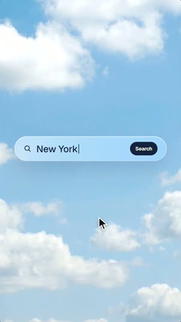
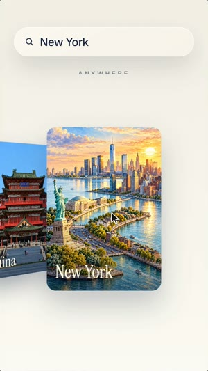
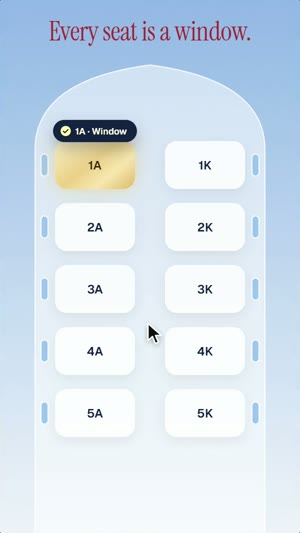
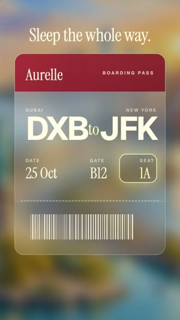
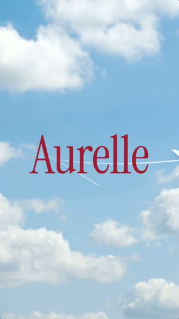

How I made a 15-second airline ad where you see the whole booking: search, a city, a date, a seat, “Booked”. Then the boarding pass tears and folds into a paper plane. Every cut is on the beat. No editing app. The full brief, ready to paste. Windows and Mac.





An ad that sells a product by showing it working. Claude builds the interface, the cursor, the transitions, the paper plane and the music. You bring a few photos and your brand.
window.jpg, sky.jpg and city-1.jpg to city-5.jpg. Only use photos you may use; the Instrument Serif and Geist font files are not included either.Nothing fades. The cloud becomes the search bar, the card flips into the calendar, the days fly into seats, the button becomes the ring, the ring opens into the city, the stub folds into the plane. The eye always has one thing to follow, so the cuts feel fast but never lost.
My-Reel-Studio, so open it and start from FIRST-REEL.md.Windows Press Win, type PowerShell, open it.
Mac Press Cmd + Space, type Terminal, open it.
Windows Paste one line at a time. Answer Y when asked.
winget install -e --id OpenJS.NodeJS.LTS winget install -e --id Git.Git winget install -e --id Python.Python.3.13 winget install -e --id Gyan.FFmpeg
Mac Homebrew first, it will ask for your password. At the end it prints two lines under “Next steps”: run them, then run the second command.
/bin/bash -c "$(curl -fsSL https://raw.githubusercontent.com/Homebrew/install/HEAD/install.sh)"
brew install node git python ffmpeg
npm install -g @anthropic-ai/claude-code
Prefer an app to a terminal? Install Claude from claude.ai/download, it has a Code tab that does the same thing.
mkdir fly-ad cd fly-ad claude
Set up a motion project in this folder. 1. Install Remotion (React 18 + TypeScript). 2. Check that Python has numpy, scipy and soundfile. Install what is missing. 3. Check that ffmpeg works from the terminal. 4. Make a folder public/photos. I will put my background photos there. 5. Build a test composition, 1080x1920, 30 fps: one of my photos as a full-screen background and on top of it a frosted glass card (backdrop blur, a thin white border, a soft shadow) with one line of text in an italic serif. Render one frame to PNG and show me the path. If something is missing, install it yourself and tell me what you installed. If something fails, find the cause and fix it.
Find on Pinterest (add "photography" or "wallpaper" to the search, not "poster"), vertical, no text, no logos, no watermarks: - an airplane window from inside, with clouds outside - a bright blue sky with soft white clouds - exactly 5 cities at golden hour (I used New York, Bali, the Colosseum, the Taj Mahal and a Chinese pagoda) That makes seven pictures in total: window.jpg, sky.jpg and city-1.jpg to city-5.jpg, each at least 1080 x 1920 px, from sources you may use. Put them in public/photos, show me a contact sheet and reject any with text, logos, watermarks or mismatched cities before the storyboard. Only backgrounds are photos. Everything else in the reel is code.
Words in square brackets are mine: put your own brand, tagline and benefits.
Build a vertical ad for a made-up airline in Remotion. 1080x1920, 30 fps, 15 seconds. All text in English. Keep text out of the top 220 px and the bottom 380 px (the Instagram interface). THE BRAND [Aurelle]. Tagline: [Fly softer.] The idea: the flight is part of the trip, not the boring bit before it. THE RHYTHM 120 BPM: one beat = 15 frames. Every cut lands on a beat. No shot stays longer than about 1.5 seconds. The camera never stands still: a tiny punch-in on every beat (scale 1.0 to 1.012 and back, no shake). THE RULE FOR TRANSITIONS No crossfades. Every transition is an element of one scene turning into the next scene, so the eye always has something to follow. Each scene also has its own background world: grey cabin, blue sky, vanilla, soft blue, warm cream, blurred city, sky again. THE STORY (show the whole booking, like a real app, with a mouse cursor) 1. HOOK (0-1 s). The airplane window photo. Italic serif in burgundy: [The best part / of your trip?] The camera rushes into the window with a speed ramp and blur on the photo only. 2. SEARCH (1-2 s). A white cloud in the sky photo shrinks into a frosted glass search bar. The cursor clicks it and types [New York], then clicks "Search". 3. CITY (2-3.5 s). The bar slides up and becomes a header, a vanilla background rises from below. A cover-flow carousel of my city photos whips in with horizontal motion blur and lands on New York. Click. A dark pill pops up: "Selected" with a check. 4. DATE (3.5-4.5 s). The New York card flips in 3D. Its back is a glass calendar for October. Headline [Any day.] Click on 25: it fills burgundy, "Selected". 5. SEAT (4.5-6 s). A soft blue background opens as a circle from the 25. The calendar cells fly into the shape of seats in a cabin, and the 25 becomes seat 1A in gold. A small window next to every seat. Headline [Every seat is a window.] Click on 1A: "1A · Window". 6. BOOK (6-7.5 s). A warm sheet slides up: Destination, Date, Seat. Click "Book". The button shrinks into a circle, a ring fills, a check pops. Headline [Booked in 3 taps.] 7. TICKET (7.5-10 s). The circle opens into the New York photo, blurred. A frosted glass boarding pass rises: brand on a burgundy strip, DXB to JFK, date, gate, seat 1A glowing. Headline [Sleep the whole way.] Then the pass TEARS along the perforation, and the stub with the barcode folds itself into a paper plane (animate the corner points of three triangles from the stub rectangle into the plane). 8. FLY (10-12.5 s). The plane cuts a circle into the blur and the sky opens behind it. It loops and the brand name is revealed right behind it, in a huge burgundy italic serif. 9. WHY (12.5-15 s). Small caps [WHY AURELLE?], then [Because the flight / is part of the trip.], then [Fly softer.] STYLE Palette: vanilla #F4F1E8, burgundy #9E1B32, ink #14213D, a pale yellow #FEFFAF for selection, plus the photos. Fonts: Instrument Serif italic for headlines, Geist for the interface. Frosted glass with real backdrop blur. A light film grain over everything. No decoration that means nothing: no bubbles, no confetti, no sparkles. No blur and no shake on text: text slides in from behind a mask. SOUND (synthesize in numpy, no samples) 120 BPM, premium and punchy: a riser for the first second, then a deep kick on every beat, claps on 2 and 4, hats, a warm bass, chord stabs on the cuts. Sounds for everything that happens: key ticks while typing, a whoosh on the carousel, clicks, a two-note chime on "Booked", a paper tear and a paper fold, a big drop when the plane cuts the sky, a breath on "Why", a final chord on the tagline. Master to about -11 LUFS, peak below -1 dBTP. CHECK BEFORE YOU SAY DONE 1. Render storyboard strips first: 5 real frames per scene, from the code, not mockups. 2. Check that no headline sits on top of the interface and no text is cut by the frame edge. 3. Then the full render with sound. Tell me what you checked and what I should watch for in motion.
Watch the draft on your phone. Then send notes like these. The first four are almost word for word what I wrote while making this ad.
It looks cheap. Use my photos as backgrounds instead of drawing the sky in code, put frosted glass on top, and remove every decoration that means nothing.
Everything is on one background. Give every scene its own world: a new background color or photo on every cut.
There is no intensity and the transitions get lost. Cut on every beat, no shot longer than 1.5 seconds, and make each element turn into the next scene instead of fading.
Show the whole process like a real app: the cursor picks a city, a date, a seat, books, and a ticket comes out. Add the benefits and why this brand.
Replace the brand with mine: [name], [tagline], [three benefits], [destination]. Keep the same rhythm.
For a concept, I would not. Their logo and slogan belong to them, and the style may not match. A made-up brand is free to look exactly how you want.
Yes. Keep the structure: a question, the product used on screen, one benefit per beat, a turn, the why. Swap the booking for your own flow.
Copy it and paste it to Claude with the words “here is the error, fix it and continue”.